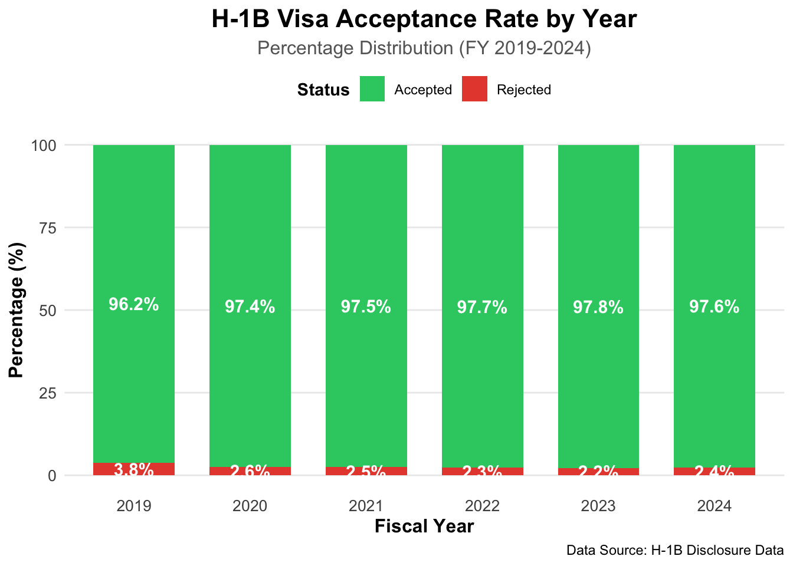

The project aims at an in-depth analysis of Labor Condition Application (LCA) datasets covering U.S. work visas for the years 2019 to 2024. The primary datasets that contain the disclosures consist of 90+ variables for each case including but not limited to the employer, the occupation, the location and the wage. As far as visualization is concerned, we will particularly deal with the statuses of the cases over the course of time, thus getting the CASE_STATUS attribute from every quarterly file (Q1-Q4) and attributing each record with the respective year. The detailed statuses will then be collapsed into broader categories thus treating “Certified” and “Certified – Withdrawn” as the accepted cases and “Denied” and “Withdrawn” as the rejected ones, in order to find out how the approval and denial patterns have shifted over the years.
Code
# Load required librarieslibrary(readxl)library(dplyr)library(ggplot2)options(warn =-1)# Helper function to read only CASE_STATUS columnread_status_only <-function(file_path, year) { df <-read_excel(file_path, col_types ="text")# Keep only CASE_STATUS column and add YEAR df <- df %>%select(CASE_STATUS) %>%mutate(YEAR = year)return(df)}# Read 2019 datadf_2019 <-read_status_only("data/2019/FY2019.xlsx", 2019)# Read 2020 datadf_2020_q1 <-read_status_only("data/2020/FY2020_Q1.xlsx", 2020)df_2020_q2 <-read_status_only("data/2020/FY2020_Q2.xlsx", 2020)df_2020_q3 <-read_status_only("data/2020/FY2020_Q3.xlsx", 2020)df_2020_q4 <-read_status_only("data/2020/FY2020_Q4.xlsx", 2020)df_2020 <-bind_rows(df_2020_q1, df_2020_q2, df_2020_q3, df_2020_q4)rm(df_2020_q1, df_2020_q2, df_2020_q3, df_2020_q4)gc()
used (Mb) gc trigger (Mb) limit (Mb) max used (Mb)
Ncells 1091271 58.3 3548442 189.6 NA 5544440 296.2
Vcells 6452671 49.3 188301112 1436.7 16384 289322900 2207.4
# Create stacked percentage bar chartggplot(summary_data_pct, aes(x =factor(YEAR), y = PERCENTAGE, fill = STATUS_CATEGORY)) +geom_bar(stat ="identity", width =0.7) +geom_text(aes(label =paste0(round(PERCENTAGE, 1), "%")), position =position_stack(vjust =0.5), size =4, color ="white",fontface ="bold") +scale_fill_manual(values =c("Accepted"="#2ecc71", "Rejected"="#e74c3c"),name ="Status") +labs(title ="H-1B Visa Acceptance Rate by Year",subtitle ="Percentage Distribution (FY 2019-2024)",x ="Fiscal Year",y ="Percentage (%)",caption ="Data Source: H-1B Disclosure Data") +theme_minimal() +theme(plot.title =element_text(size =16, face ="bold", hjust =0.5),plot.subtitle =element_text(size =12, hjust =0.5, color ="gray40"),axis.title =element_text(size =12, face ="bold"),axis.text =element_text(size =10),legend.position ="top",legend.title =element_text(face ="bold"),panel.grid.minor =element_blank(),panel.grid.major.x =element_blank() )

The analysis showed relatively stable volumes in most years, with accepted applications typically in the 550,000–650,000 range and rejected applications forming only a small fraction of the total. A notable aspect of the data is a prominent spike in accepted filings in FY 2021, where the count rises to more than 800,000 cases. This feature aligns with two well-documented contextual factors which are a rebound in employer demand following the initial COVID-19 hiring slowdown in 2020, and the introduction of the electronic H-1B registration system for the FY 2021 cap season, which reduced initial filing costs and made it easier for employers to submit registrations.
The plot visualising missing data for FY2024 Q4 shows that almost all of our key variables have no missing data for fields such as CASE_STATUS, employer and worksite location, SOC codes/titles, and most wage‐related variables. The main exceptions are WAGE_RATE_OF_PAY_TO, which has a noticable proportion of missing values, and PW_WAGE_LEVEL, which has a smaller but still significant amount of missingness. Because WAGE_RATE_OF_PAY_TO is often blank when a single wage value is reported, we focus primarily on WAGE_RATE_OF_PAY_FROM for our wage analyses.